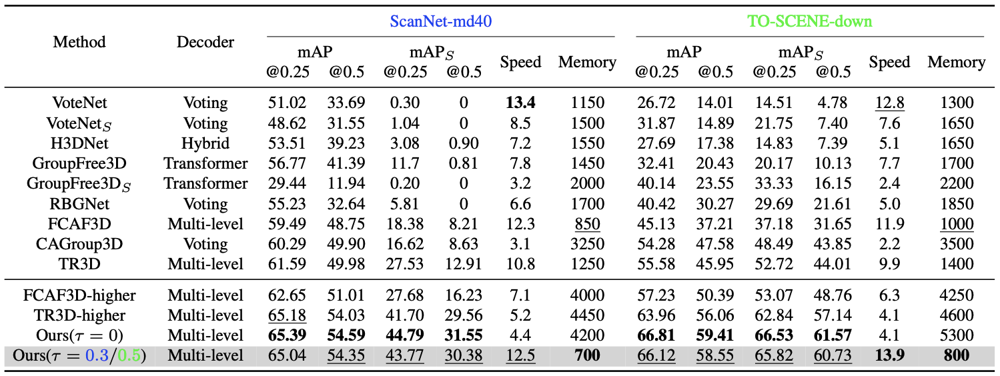

1Department of Automation, Tsinghua University 2Beijing National Research Center for Information Science and Technology, China 3The School of Intelligence Science and Technology, University of Science and Technology Beijing
In this paper, we propose an efficient feature pruning strategy for 3D small object detection. Conventional 3D object detection methods struggle on small objects due to the weak geometric information from a small number of points. Although increasing the spatial resolution of feature representations can improve the detection performance on small objects, the additional computational overhead is unaffordable.
With in-depth study, we observe the growth of computation mainly comes from the upsampling operation in the decoder of 3D detector. Motivated by this, we present a multi-level 3D detector named DSPDet3D which benefits from high spatial resolution to achieves high accuracy on small object detection, while reducing redundant computation by only focusing on small object areas. Specifically, we theoretically derive a dynamic spatial pruning (DSP) strategy to prune the redundant spatial representation of 3D scene in a cascade manner according to the distribution of objects. Then we design DSP module following this strategy and construct DSPDet3D with this efficient module. On ScanNet and TO-SCENE dataset, our method achieves leading performance on small object detection. Moreover, DSPDet3D trained with only ScanNet rooms can generalize well to scenes in larger scale. It takes less than 2s to directly process a whole building consisting of more than 4500k points while detecting out almost all objects, ranging from cups to beds, on a single RTX 3090 GPU.
Approach
Through in-depth analysis, we summarize three key points for designing an effective and efficient 3D detector for small object detection: (1) multi-level FPN-like architecture; (2) increasing the spatial resolution; (3) removing the useless computation in upsampling layers. To this end, we derive an optimal pruning strategy and propose DSPDet3D.
Illustration of DSPDet3D. The voxelized point clouds are fed into a high-resolution sparse convolutional backbone, which output four levels of scene representations. Four dynamic spatial pruning (DSP) modules are stacked to construct a multi-level decoder and detect objects from coarse to fine. DSP module utilizes a light-weight learnable module to predict the pruning mask. During inference, we discretize the pruning mask and use it to guide pruning before generative upsampling. While during training we interpolate the pruning mask to next level and prune the voxel features after generative upsampling.
Experiments
We organize two benchmarks on ScanNet and TO-SCENE datasets for 3D small object detection.

We compare our method with popular and state-of-the-art 3D object detection methods. As shown above, DSPDet3D with a proper threshold takes advantage of the high-resolution scene representation to achieve much higher performance. Furthermore, DSPDet3D is the most memory-efficient model among all mainstream methods.
Bibtex
@article{xu2023dsp,
title={3D Small Object Detection with Dynamic Spatial Pruning},
author={Xiuwei Xu and Zhihao Sun and Ziwei Wang and Hongmin Liu and Jie Zhou and Jiwen Lu},
journal={arXiv preprint arXiv:2305.03716},
year={2023}
}
 Paper (arXiv)
Paper (arXiv)
 Code (GitHub)
Code (GitHub)